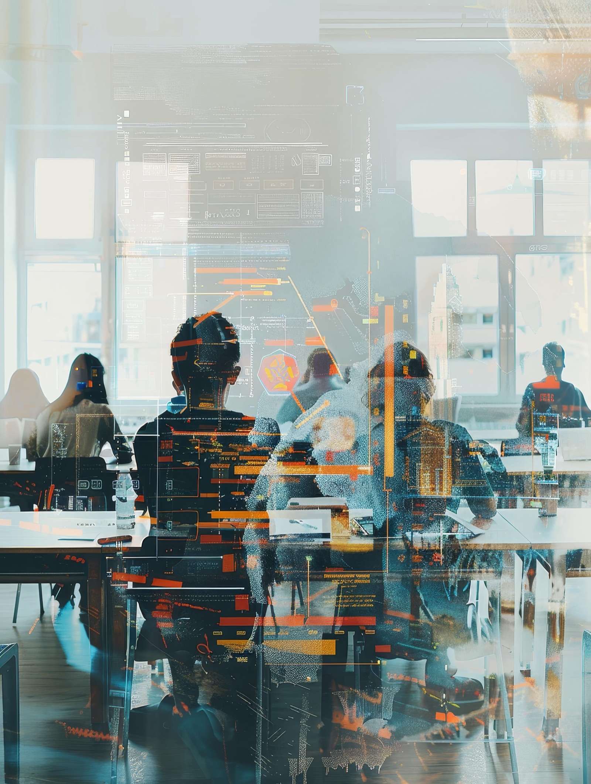

FOIward akademija
Tečajevi koji tvoju ideju vode naprijed.
Od prve ideje do provjere koncepta, uz jasne lekcije, zadatke i materijale.
FOIward akademija
Od prve ideje do provjere koncepta, uz jasne lekcije, zadatke i materijale.

Faza 01
Prepoznaj problem, opiši korisnika i oblikuj početnu vrijednosnu ponudu.
Faza 02
Istraživanje korisnika, validacija pretpostavki i razvoj održivog modela.

Tehnologije
Koristi AI za istraživanje, sintezu, ideaciju i pripremu kvalitetnijeg pitcha.

Sigurnost i industrija
Razmišljaj o sigurnosti, privatnosti, otpornosti i čovjeku u središtu tehnologije.

FOIward platforma
Daj ideji FOIward.
Pregled traje 30 sekundi. Gumb “Izvezi WebM” snima canvas verziju trailera u pregledniku i preuzima video datoteku.